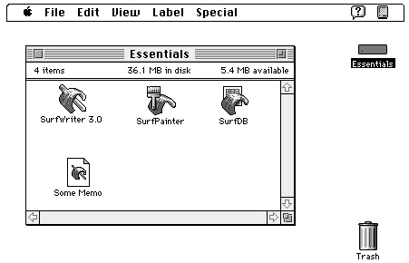
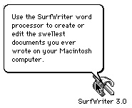
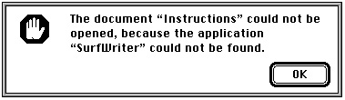

Introduction to the Finder Interface
The Finder is an application that manages the user's desktop interface. The desktop is the working environment displayed on the Macintosh computer--namely, the gray background area on the screen.On the desktop, the Finder displays icons representing your application and the documents it creates, and it tracks user activity. An icon is an image that the Finder displays to graphically represent some object--such as a file, a folder, or the Trash--
that the user can manipulate. For example, Figure 7-1 on the next page shows icons that the Finder displays for several sample applications (called SurfWriter 3.0, SurfPainter, and SurfDB) and for a text document (named Some Memo) that a user has created
with the SurfWriter application. These icons are displayed in a window that the Finder uses to display the contents of the disk icon labeled Essentials.Figure 7-1 Application and document icons in a window on the desktop

To distinguish your product for the user, you should design your own icons for all the files associated with your application. For each file type that your application uses or creates, you should define large, small, black-and-white, and 4-bit and 8-bit color icons--each in a separate resource. Your application can then use another resource, called a bundle resource, to assign these icons to all your files of a particular type. For example,
the document icon representing Some Memo in Figure 7-1 is the icon that the SurfWriter application assigns to all text files that it creates. When double-clicking the icon for Some Memo, the user asks the Finder to launch the SurfWriter application, which in turn responds by opening the document Some Memo in a window.Stationery pads are files that a user creates to serve as templates for other documents. Editions are special files that contain data to be shared among applications. Query documents contain commands and data in a format appropriate for a database or other data source. If your application supports any of these document types, you can create icons for the Finder that distinguish the stationery pads, editions, and query documents that users create with your application. For example, Plate 4 at the front of this book shows customized stationery pad and edition icons used for documents created with the SurfWriter application. (Editions are described in Inside Macintosh: Interapplication Communication. Query documents are described in Inside Macintosh: Communications.)
You might also like your application to create customized icons for documents on the desktop. Or, if instead of producing an application, you produce and distribute information documents (such as database files, stationery pads, query documents, clip art libraries, or dictionaries) to be used by other applications, you can also provide customized icons for the Finder that distinguish your documents.
Macintosh users have access to online assistance in the form of help balloons. You can customize the help balloon that the Finder displays for your application icon. For example, Figure 7-2 shows a customized help balloon for the SurfWriter application icon.
Figure 7-2 A customized help balloon for an application icon

When appropriate, the Finder starts up your application and uses Apple events to tell your application what documents to open or print. To perform these tasks, the Finder relies on information you provide through resources. When the user creates or installs a file, the File Manager (described in Inside Macintosh: Files) initially stores some of this information in the volume's catalog file. (The catalog file is a special file, located on a volume, that contains information about the hierarchical organization of files and folders on that volume.)
The Finder extracts from the catalog file the information you provide in your resources and, for quick access to your resource information, the Finder uses that information to build either a desktop database for all volumes over 2 MB or a Desktop file for volumes under 2 MB. (The desktop database is a Finder-maintained database of icons, file types, applications, version data, and comments; the Desktop file is a resource file in which the Finder stores this information for volumes under 2 MB.)
You can even specify resources that identify your application when the user tries to open a document and your application is missing. For example, if a user tries to open a document named Instructions and the SurfWriter application is missing from the user's computer system, the Finder displays the alert box in Figure 7-3.
Figure 7-3 A Finder message identifying a missing application

The System Folder is a directory that contains the software that Macintosh computers use to start up. The System Folder includes a set of folders for storing related files. Your application may use several of these folders for storing its files. For example, you may want to use the Preferences folder to store preferences files that your application needs when starting up.